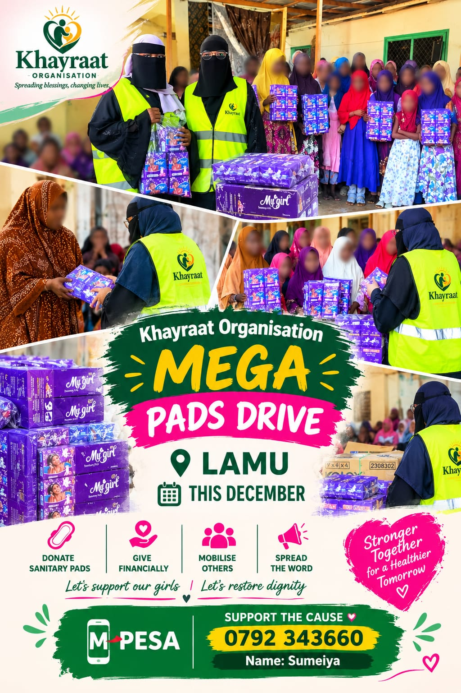
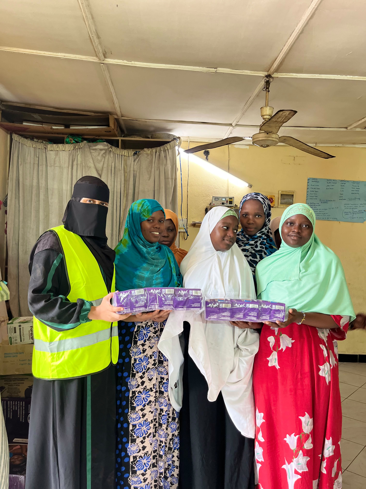
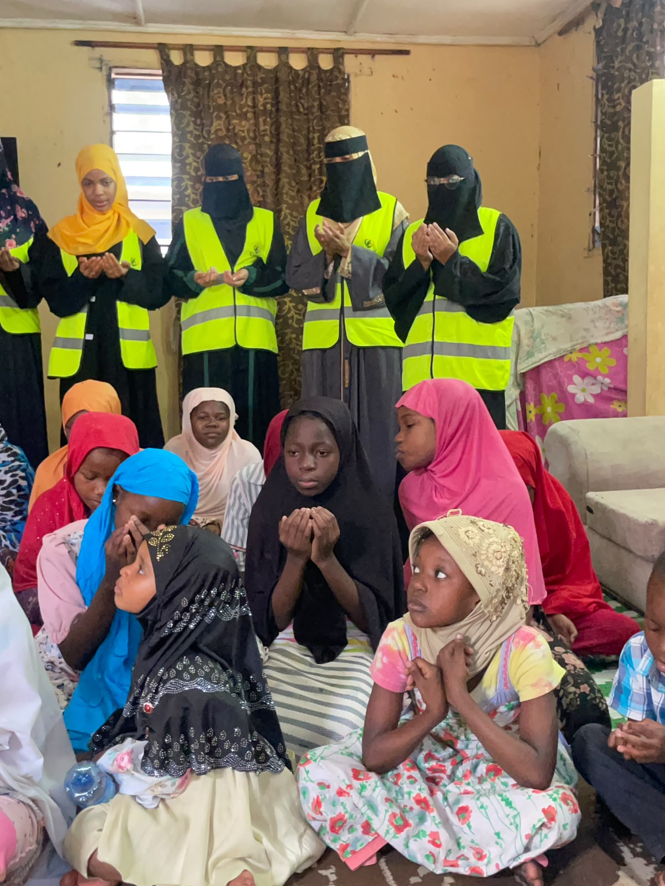
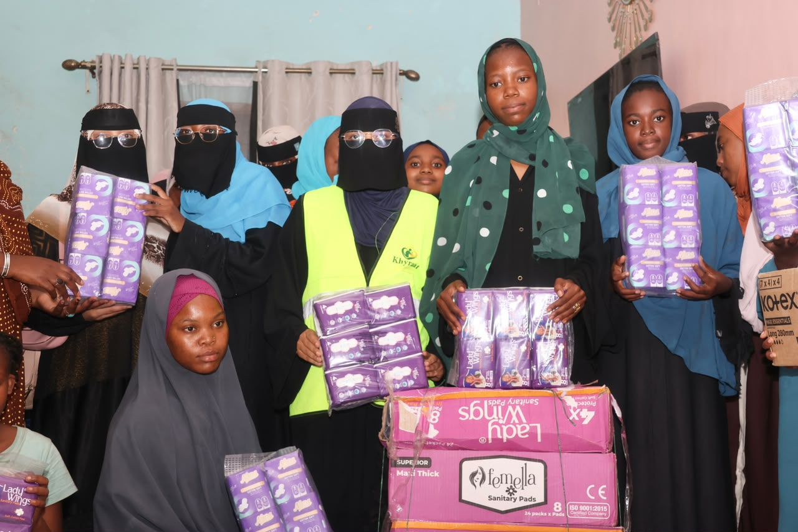
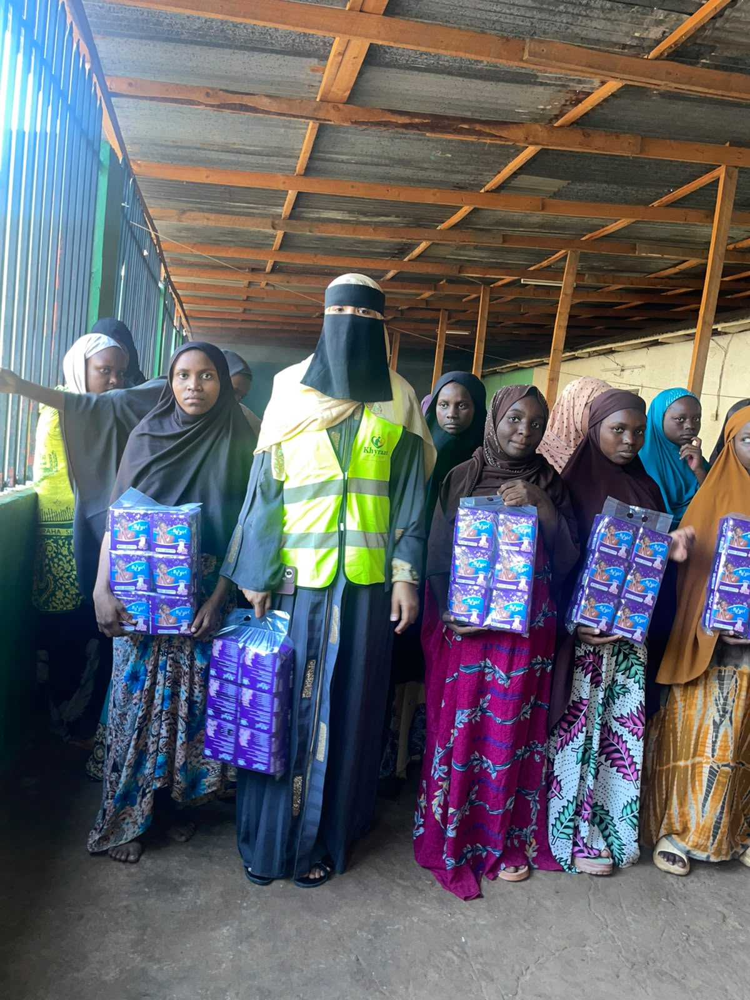
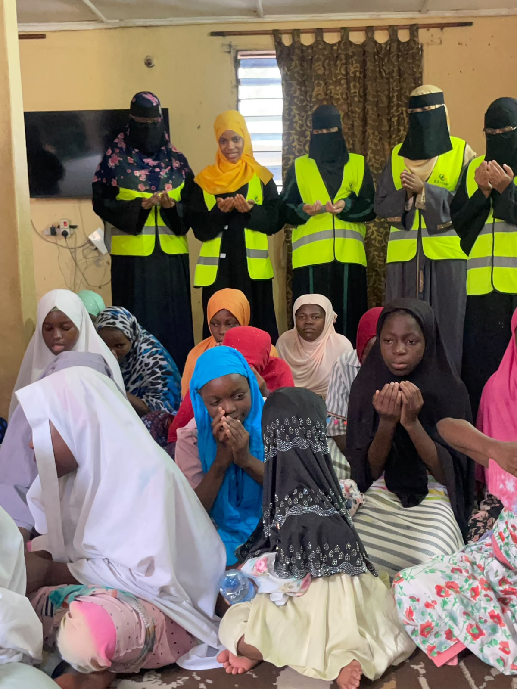
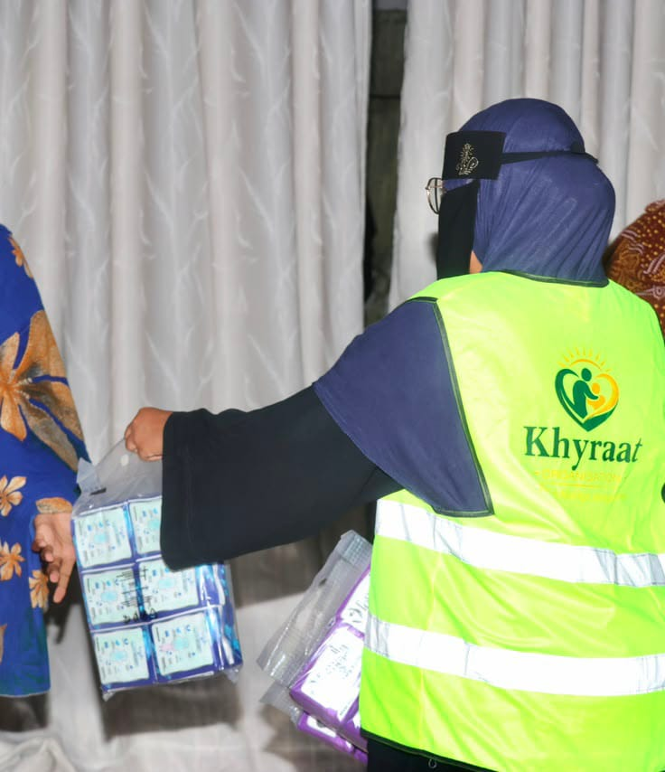

Mega Pads Drive — Lamu
Planned for December 2026 — exact date to be announced.
Khyrat Organisation is planning a Mega Pads Drive in Lamu. More details will be announced soon.
Contact Us | Wasiliana Nasi
WELCOME TO KHYRAT ORGANISATION
Khyrat Organisation is dedicated to supporting orphans and vulnerable children through care, education, basic needs and opportunities for a brighter future.
ABOUT US
Khyrat Organisation is dedicated to supporting orphans and vulnerable children through care, education, basic needs and opportunities for a brighter future.
Learn More →Every act of kindness can make a meaningful difference in someone's life.
OUR PROGRAMS
Our programs focus on the care, education, basic needs and development of orphans and vulnerable children.
Providing care, basic needs and support for orphaned children.
Helping orphans and vulnerable children access education and learning materials.
Providing food, clothing and essential support to children in need.
Creating opportunities that help children grow, learn and build a brighter future.
OUR PROJECTS
Through compassion and community support, Khyrat Organisation continues to bring hope and support to orphans and vulnerable children.

Providing care, kindness and essential support to vulnerable children.

Working together with the community to create hope and positive change.

Supporting families and children with essential needs and assistance.

Creating a caring environment where every child can feel supported.

Encouraging education and opportunities for a brighter future.

Together, we are building brighter futures for vulnerable children.
Be Part
of the Change
Your donation helps provide care, education, food and essential support to orphans and vulnerable children. Together, we can give every child hope for a brighter future.
M-Pesa: +254 792 343660

Planned for December 2026 — exact date to be announced.
Khyrat Organisation is planning a Mega Pads Drive in Lamu. More details will be announced soon.
Contact Us | Wasiliana Nasi